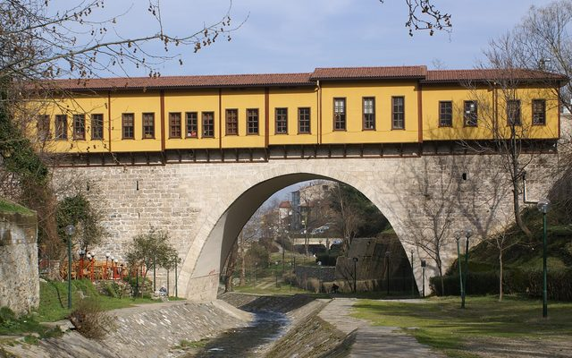

मुखपृष्ठ › प्रांत-दर-प्रांत घूमने की जगहें › बुर्सा
Kültür Varlıkları गाइड में बुर्सा की 21 जगहें हैं: 10 संग्रहालय, 5 धार्मिक इमारत, 3 क़िला और ऐतिहासिक इमारत, 1 पुरातात्विक स्थल, 1 जलप्रपात, 1 स्की रिज़ॉर्ट। नीचे मुख्य आकर्षण, नक्शा और पूरी सूची है।
⭐ मुख्य आकर्षण

1 · बुर्सा · संग्रहालयबुर्सा पुरातत्व संग्रहालय
कुल्त्युरपार्क के हरे-भरे परिसर में स्थित बुर्सा पुरातत्व संग्रहालय बिथिनिया और मिसिया के प्राचीन अतीत से परिचय कराता है। प्राचीन काल में बुर्सा को प्रूसा कहा जाता था,…

2 · बुर्सा · संग्रहालयबुर्सा अतातुर्क गृह संग्रहालय
बुर्सा अतातुर्क गृह संग्रहालय 19वीं सदी के अंत की एक सुरुचिपूर्ण हवेली है, जहाँ अतातुर्क बुर्सा की यात्राओं में ठहरे थे। बग़ीचे में स्थित यह हवेली उस दौर के बुर्सा की…

3 · बुर्सा · संग्रहालयबुर्सा नगर संग्रहालय
2004 से हेयकेल में पुराने न्यायालय भवन में। पहली उस्मानी राजधानी, रेशम व्यापार, कारागोज़ छाया-नाटक परंपरा और कारीगरों के जीवन तक बुर्सा की कहानी पुनर्रचित दुकानों और…
🗺 नक्शे पर
📍 सभी जगहें (21)
संग्रहालय (10)
बुर्सा पुरातत्व संग्रहालयसंग्रहालयबुर्सा अतातुर्क गृह संग्रहालयसंग्रहालयबुर्सा नगर संग्रहालयसंग्रहालय बुर्सा तुर्क-इस्लामी कला संग्रहालयसंग्रहालय
बुर्सा तुर्क-इस्लामी कला संग्रहालयसंग्रहालय मुदान्या युद्धविराम गृह संग्रहालयसंग्रहालय
मुदान्या युद्धविराम गृह संग्रहालयसंग्रहालय तोफ़ाश अनातोलियाई गाड़ियाँ संग्रहालयसंग्रहालय
तोफ़ाश अनातोलियाई गाड़ियाँ संग्रहालयसंग्रहालय येनीशेहिर शेमाकी गृह संग्रहालयसंग्रहालय
येनीशेहिर शेमाकी गृह संग्रहालयसंग्रहालय इज़निक संग्रहालयसंग्रहालयनिल्युफ़र हातून इमारेत (तुर्क-इस्लामी कला संग्रहालय)संग्रहालयउस्मानी घर संग्रहालयसंग्रहालय
इज़निक संग्रहालयसंग्रहालयनिल्युफ़र हातून इमारेत (तुर्क-इस्लामी कला संग्रहालय)संग्रहालयउस्मानी घर संग्रहालयसंग्रहालयधार्मिक इमारत (5)
 बुर्सा उलू मस्जिदधार्मिक इमारत
बुर्सा उलू मस्जिदधार्मिक इमारत बुर्सा हरी मस्जिद और हरा मकबराधार्मिक इमारत
बुर्सा हरी मस्जिद और हरा मकबराधार्मिक इमारत अमीर सुल्तान मस्जिदधार्मिक इमारत
अमीर सुल्तान मस्जिदधार्मिक इमारत मुरादिये परिसरधार्मिक इमारतबुर्सा इज़निक झील बेसिलिकाधार्मिक इमारत
मुरादिये परिसरधार्मिक इमारतबुर्सा इज़निक झील बेसिलिकाधार्मिक इमारतक़िला और ऐतिहासिक इमारत (3)
 जुमालिकिज़िक गाँवक़िला और ऐतिहासिक इमारत
जुमालिकिज़िक गाँवक़िला और ऐतिहासिक इमारत
इरगांदी पुलक़िला और ऐतिहासिक इमारत कोज़ा हानक़िला और ऐतिहासिक इमारत
कोज़ा हानक़िला और ऐतिहासिक इमारत